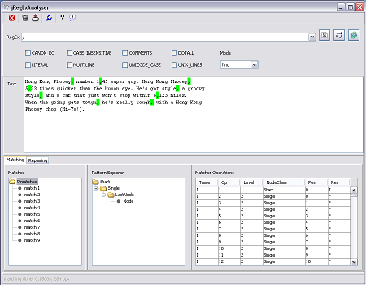
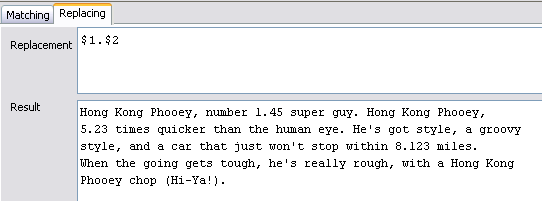
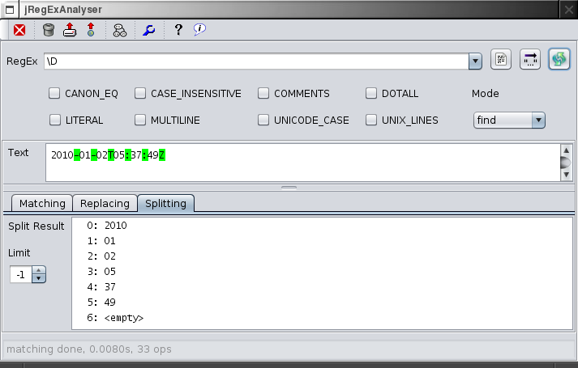

Tutorial
This tutorial will demonstrate jRegExAnalyser for very simple use cases. You should already have a basic understanding of how regular expressions work.
If needed, just search out for one of the many tutorials on this topic or get a copy of the great book Mastering Regular Expressions.
Use the default pattern settings, i.e. no flags enabled, and the find mode:
Search and Replace
Assume we have the following text1:
Hong Kong Phooey, number 1,45 super guy. Hong Kong Phooey, 5,23 times quicker than the human eye. He's got style, a groovy style, and a car that just won't stop within 8,123 miles. When the going gets tough, he's really rough, with a Hong Kong Phooey chop (Hi-Ya!).
Start jRegExAnalyser and copy2 this text into the text field.
The objective is to replace the comma based numbers with numbers containing a decimal point. So as a first try, we just enter a comma in the RegEx field:
,
The match results are highlighted in the text and the details are displayed in the matching tab:

If the match results are not instantly highlighted3 press the apply button:
We got 9 matches, some of them are commas in numbers, some of them are commas behind regular words. So we need something more elaborate to match just the commas in numbers. We extend the regular expression to match one or more digits before and after the comma:
\d+,\d+
Now we got three matches for the three numbers. For the replace operation we need the matched digits to preverse them using capturing group substitution in the replacement text. So we add a group around each sequence of digits:
(\d+),(\d+)

Now the only change in the result is that all three matches show two match groups. By selecting these groups we can verify that the integer and fractional parts of the numbers are captured correctly.
The pattern is now ready for replacing. So switch over to the replacing tab and enter the following replacement text referring to the two match groups, separated with a point:
$1.$2
Finally verify, that the result text holds the desired result.

Using the 'convert to string' function you can grab the following, properly escaped ready-to-use Java regular expression string:
Split a Date String
Assume you like to split up a date string like '2010-01-02T05:37:49Z'.
Copy this string to the text field and enter the regular expression '\D'.
Switching to the 'Splitting' tab you'll find the resulting list from splitting the text using the regular expression as delimiter:
